URL Rewrite is a requirement for publishing Rest Services (generated with .NET) How to install it? 1. In case of IIS7 / 7.5 (distributed by Windows 7, Vista and 2008) and 8 (distributed by Windows 8), you have to follow these steps: a. Go to this URL http://www.iis.net/download/URLRewrite and click 'Install': 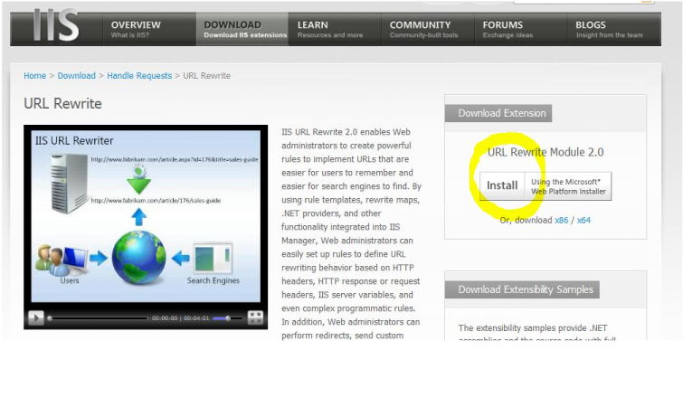 b. Select 'URL Rewrite' and click 'Install' button: 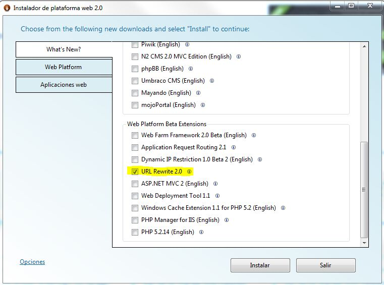 c. Click 'Accept' button: 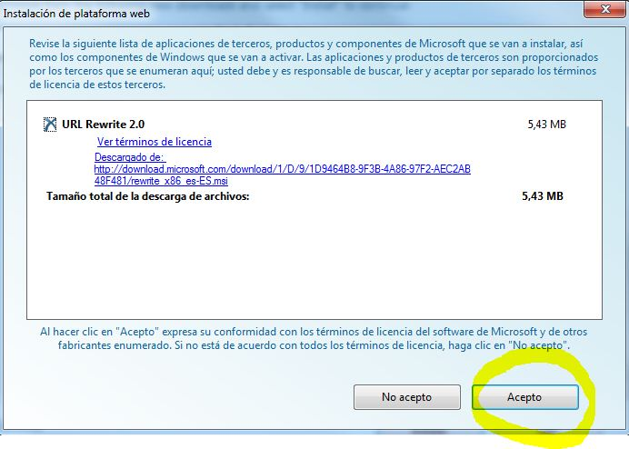 Important: If the dialog change to Web platform 3.0 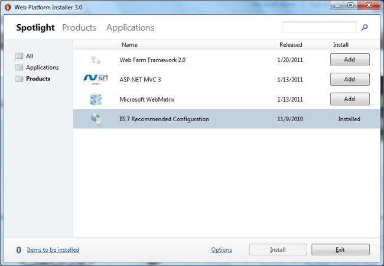 It's strongly recommended, in the first step (a), download and run the setup locally 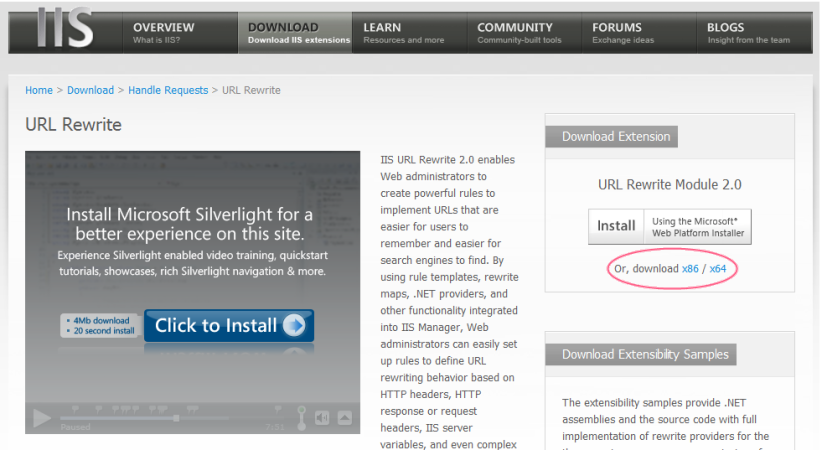 If Rest pages doesn't work properly, given the 404 error, means that an IIS configuration is pending. "%WINDIR%\Microsoft.Net\Framework\v3.0\Windows Communication Foundation\ServiceModelReg.exe" –i Or it is required browser directory permission on IIS. for more information see URLRewrite - Common issues
a.Download IIRF from http://iirf.codeplex.com/ (Windows XP needed version 2.0.1.15) b. Install as explained in http://dotnetzip.herobo.com/Iirf20Help/html/6b426152-704a-4907-b87e-2e1938a89cad.htm (Installing IIRF), To sum up, it implied: b1. Unzip the files 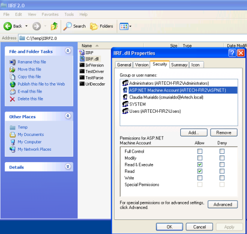 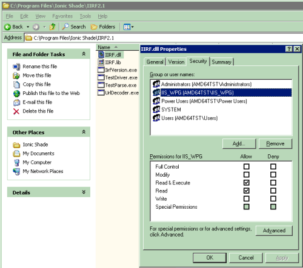 b3. Include this file (IIRF.dll) such as ISAPI Filter: Default Web Site -> properties -> isapi filters -> Add y alli seleccionar la IIRF.dll. 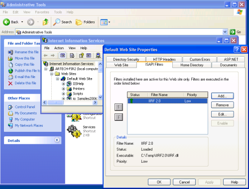 b4. Include Mime type: Virtual directory -> properties-> Http Headers -> MIME Types , include extension = .json, mimetype: text/plain 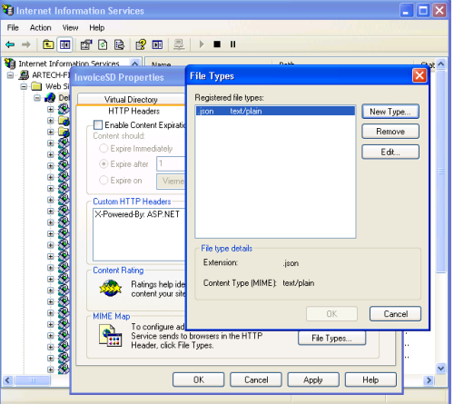 b5. Include .svc extension in aspnet_isapidll. It means Virtual Directory -> properties-> configuration -> mappings: .svc extension with aspnet_isapi.dll. 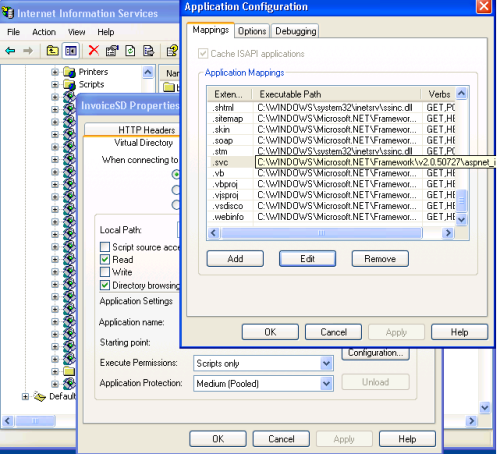 b6. Configure permissions of .SVC with Limit to=GET, HEAD, POST, DEBUG. Like the following picture: 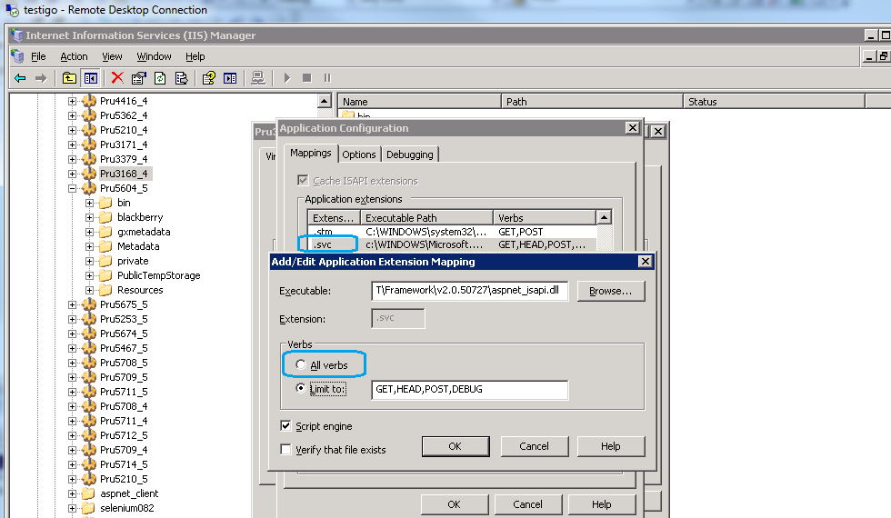
Note:In order to deploy an application under IIs 6 or lower, the iirf.ini file must e included. This file has the rewrite rules and is generated when IIIS version property is set to "IIS 6 or lower"
|
| Backlinks |
| Android - FAQ and Common Issues |
| GeneXus 17 hardware and software requirements |
| GXflow Software Requirements |
| URLRewrite - Common issues |